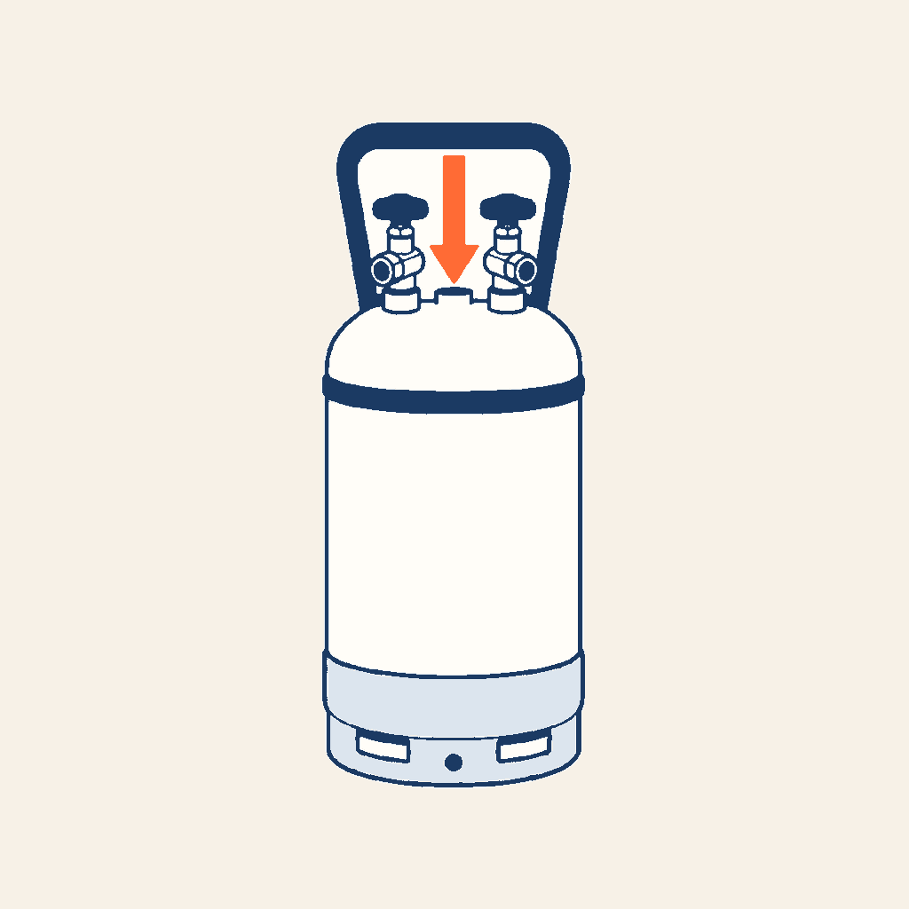
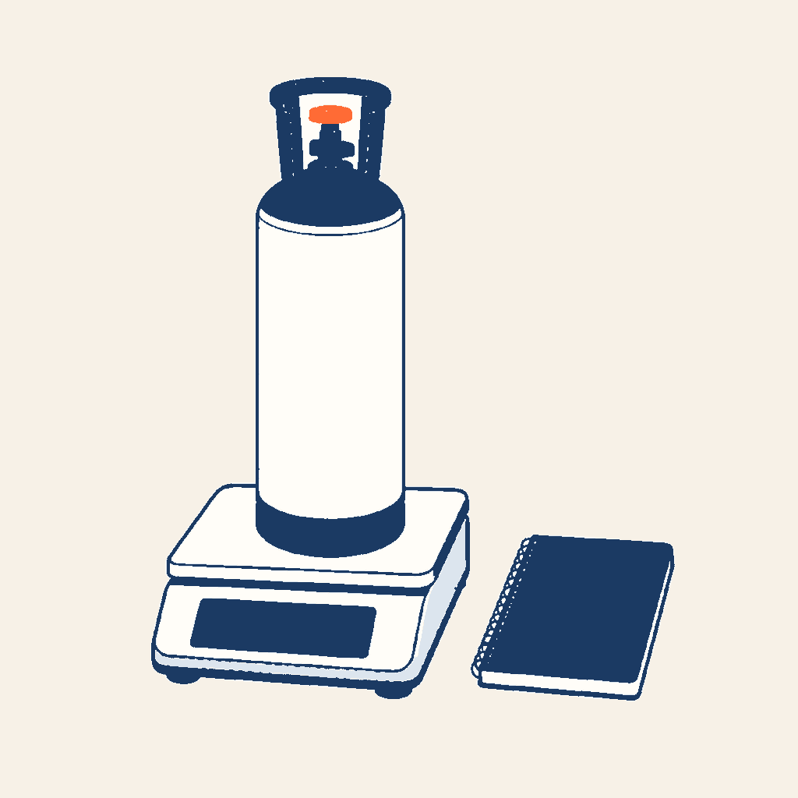
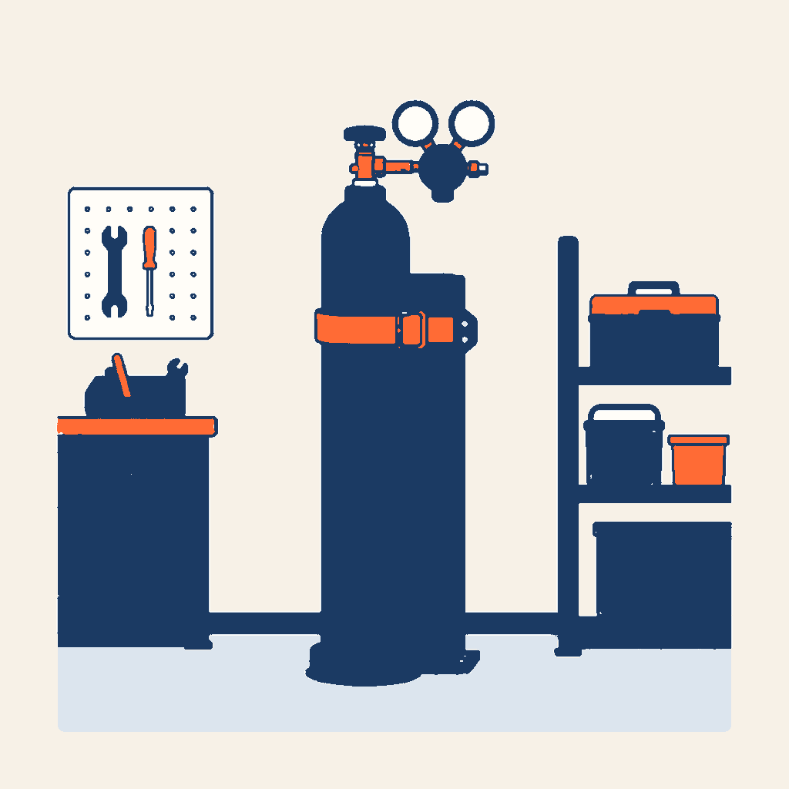

0,95×
GESTES · BOUTEILLES
Les bouteilles
de fluide
Avant de brancher un flexible, vous savez quelle bouteille vous avez dans les mains, par quel robinet le fluide va sortir, et combien elle peut en recevoir.
16 écrans · 6 dossiers · 9 exercices
Statut : en cours de relecture. Ce cours n’est pas encore validé par F. Henninot.



Point réglementaire. Les bouteilles non rechargeables de fluides fluorés sont interdites depuis le 4 juillet 2007 (règlement (UE) 2024/573, annexe IV point 1, et article 11 § 3). Ce cours ne donne aucun taux de remplissage réglementaire : les valeurs des exercices sont annoncées comme telles. Sur le chantier, l’étiquette, la notice et le fournisseur de la bouteille priment.
Sert notamment pour
- CAP IFCA — compétence C4.2
- « Manipuler le fluide frigorigène et les huiles » · savoir S0.2 « Gestion de l’environnement du site et des déchets ».
- Bac Pro MFER — savoirs
- S4.1.2 « Les fluides pour circuits frigorifiques » · S7.2.3 « La sécurité sur site » · S2.4.2 « Les déchets ».
- TP Monteur dépanneur frigoriste
- CP2 « Mettre en service une installation frigorifique monoposte à température positive » · CP5 « Réaliser la maintenance préventive d’une installation frigorifique mono-étagée de type monoposte et de climatisation ».
- Attestation d’aptitude — arrêté du 21 novembre 2025
- 5.02 « Vider et remplir un cylindre de réfrigérant à l’état liquide et à l’état gazeux » · 5.05 « Déterminer l’état (liquide, gazeux) et les conditions (sous-refroidi, saturé ou surchauffé) d’un réfrigérant avant tout remplissage… » · 5.06 « Choisir le bon type de balance et l’utiliser pour peser le réfrigérant ».